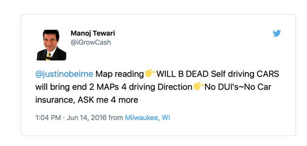

Het Web Map Universum
Poging tot..

Door: Niene Boeijen
Niene Boeijen


Propaedeuse Kunstacademie
MSc Geo Information Science
Stage Geo Web Visualisatie
Maptime Amsterdam & Utrecht
Web Cartograaf
Wat moet je kunnen als
[[Web]] Cartograaf
Tegenwoordig is een kaart niet meer een plat op papier maar vaak dynamisch, interactief en online!

There has never been more open data available than at this moment in time, and everyone from global NGOs to armchair hobbyists are using that data to create maps. [source]
Cartografie is geen niche meer:[source]
- Big data
- Massaconsumptie
- Open source sofware
- Open data
Web Mapping
- Interactie
- User-Experience
- Animatie
The realization of the interactive map as an experience, not just a map design.[source]
Web Mapping
- snelheid en schaalbaarheid
- Data-gestuurd
- Responsive ontwerp
- Gepersonaliseerd


Cartography is the new code.
 [source]
[source]
Vaardigheden
You need to be able to find, manipulate, and store spatial and non-spatial data. You need to be able to design a functional and attractive cartographic representation of that data as well as the UI controls to operate it. You need to be able to implement that design through code.[source: Axis Maps]
van Cartograaf naar ..
Data-analist / GIS-specialist
Full-stack ontwikkelaar
Interactie-ontwerper (IX)
User Experience-ontwerpter (UX)
 [source]
[source]
... the demand for cartographers is projected to grow nearly 30 percent by 2024.[source]
Technieken in
Het Web Map Universum!
Data Design Code
Even testen..
Geo-data
Projecties
Desktop GIS(ArcGIS , Qgis)
HTML, CSS, JS
Web maps - Leaflet - raster tegels
GeoJSON format
Web Map Services (WMS / WFS)
Geo databases - Postgis
Vector tegels
Van Data naar het Web
Doel >> Functionaliteit >> Mapping Technologie >> Design

Data Code Design
- Laad de data
- Maak dingen werkend
- Maak dingen mooi
Doel?
Veel manieren om geo-data op het web te krijgen!
- Interactieve/statische web map
- Web GIS applicatie
- WMS/WFS
- Download link
- Animated, real time
- Collaborative web maps
- Online atlasses
- Infographic, plaatje, video, gif
Bij Webmapper

Bij Webmapper
Elke dag programmeren..
& creatief bezig zijn


Bij Webmapper
Open Source
Open Data
Open standaarden
Bij Webmapper
Gebruiken we de hele Web Map Universe
Afhankelijk van de doel en functionaliteit
3 voorbeelden uit het werkveld
Hier Verwarmt
Vraag
Gasverbruik per buurt en ligging warmtenetten
Update : 1x per jaar
Klant:
Web ontwikkelaars, géén geo kennis!
Oplossing:
Leaflet.js met Raster tegels cache
Eindproduct Webmapper:
Rastertegels xyz
Advies over Leaflet.js
DataLab Amsterdam

Vraag:
Cartografisch mooie stijlen 3x voor achtergrondkaart Amsterdamse data
Wekelijkse update
Klant:
Eigen server, eigen database, eigen front-end
Zelf beheer en update
Oplossing:
PostGIS + Mapserver + MapProxy caching
Eindproduct Webmapper
Map files voor MapServer
Configuratie MapProxy
Advies Mapserver, MapProxy en Leaflet
Energielabelatlas
Vraag:
Website, die energielabels per woning of gemeente laat zien.
Informatie per gemeente, huis
Zoekfuntie op plaats en adres
15 minuten update!
Klant:
Geen geo kennis, volledig uitbesteed
Oplossing:
D3.js + Leaflet.js applicatie
Automatische update - backend
Eindproduct
Website, back-end, beheer, onderhoud
Verre toekomst? ..
 [source] [source]
[source]
nieneb.github.io/web_map_universe/
Samenvatting
De nieuwe cartograaf
Data Design Code
Web Map Universum
Voorbeelden uit het werkveld
Toekomst
Kom langs!

Bedankt!
niene@webmapper.net
@NieneB